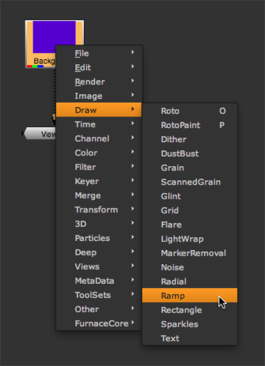

A node is simply one of the building blocks for the list of operations you want to complete. A node tree is a diagram that shows the order in which the operations are performed. Do the following to add a few nodes and start your node tree. The result creates the background for the project.
To insert nodes:
| 1. | On the Toolbar, click the first icon to display a menu for nodes that are in the Images category. |
| 2. | Select Constant from the menu to insert this node into the Node Graph pane. |
When you insert a new node, its control panel also displays with parameters that let you define what the node produces. In this case, the Constant node creates a solid color backdrop.

| 3. | In the Constant control panel, click on the color wheel to open the Color Picker. |
| 4. | Drag the color sliders and the cursor inside the wheel to choose a light color, something appropriate for the “horizon” of the composite background. Then, close the color wheel window. |
At this point, you should probably rename “Constant” to something more descriptive.
| 5. | Inside the control panel, click on the Constant name. You can now edit the name, so type Background and press Enter. |
From here onward, we’ll call this node the “Background” node.
| 6. | Close the control panel for the Background node. When you need to reopen it, just double-click the node and the control panel reappears. |
| 7. | Click on the Background node to select it. Then, click the right mouse button and choose Draw > Ramp. |

| 8. | Drag the tail of the arrow from the Viewer1 node to the center of the Ramp1 node. You’ll see the output of the Background node and the ramp controls displayed in the Viewer window. |
| 9. | Click the Color tab inside the control panel for Ramp1. Then choose a dark color that blends well with the color you selected for the Background node. |

| 10. | Click the Ramp tab in the control panel to reactivate the overlay controls. Then, drag the p0 and p1 control points to adjust the spread and angle of the ramp over the background. |
| 11. | When you’re happy with the results, close the Ramp1 control panel to remove the overlay. |
|
|